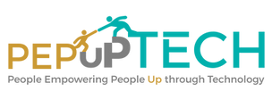
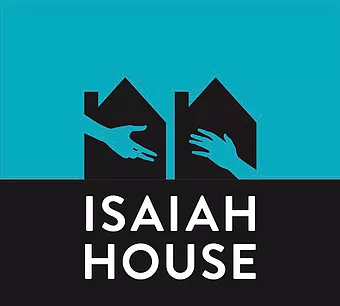

About Jessica

With a grounding in social work and mindfulness-based meditation, Jessica has spent two decades leading individuals, non-profits, and ethical corporations through transformations that allow them to raise more money, build stronger teams, and make measurable progress towards our collective goals of a more just, equitable and enlightened society.
A featured speaker on strategic activism, transformative philanthropy, empowerment-based fundraising and corporate social responsibility, Jessica’s joy-centric, high-energy style provides both tangible deliverables and an inspiring, overarching sense of possibility. She has most recently been featured at Candid, Fundraising Day New York, Nonprofit New York, and the past three years of SXSW.
Jessica holds a Masters in Social Work from Columbia University, a Bachelor of Arts from the University of Southern California, and will receive her certification as a Mindfulness-Based Meditation Teacher in 2022. She serves on the Boards of Hand in Hand: The Domestic Employers Network and SOMA Action, and is a proud community member of Maplewood, NJ where she lives with her partner and two young sons.
Clients
- 
- 
Services
-
Coach, Cheerleader, Champion
- Executive coaching
- Executive and Board mediation and conflict resolution
- Facilitation of team building meetings and retreats
- Mindfulness based meditation training for individuals and teams
-
Systems Developer
- Development plan creation
- Marketing and social strategy creation
- Development talent recruitment, training and onboarding
- Impact audits
-
Idea Cultivator
- Facilitation of Board meetings and retreats
- Keynote speaking on topics including: Empowered Fundraising ("No Tin Cups"), The New CSR, Strategic Activism
- Thought partnership
- Idea incubation
-
Generosity Unlocker
- Strategy development for and management of DAFs and family foundations
- Individual and family philanthropic advising
- Election investment consultation
- Corporate and major giving strategy creation
- Board restructuring and transformation
- Pitch/ask delivery at fundraising events
-
Justice Guide
- In partnership with Kyle Bibby, Jessica offers corporations and organizations tailored strategies in three phases to adopt antiracist practices for greater equity in their cultures, teams and communities. Read more here.